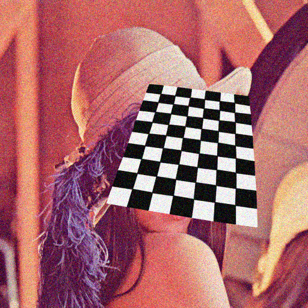
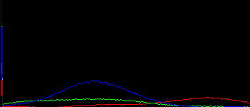
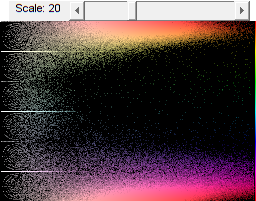

Video Histogram
Demo to show live histogram of video, both 1D histograms of RGB channels and 2D histogram of Hue-Saturation.
Sources:
function varargout = color_histogram_demo_gui(varargin) % setup video source vid = createVideoCapture([], 'chess'); pause(0.5); assert(vid.isOpened()); % build and initialize GUI opts = default_options(); h = buildGUI(vid, opts); if nargout > 0, varargout{1} = h; end % main loop: while UI still open, keep processing frames while all(ishghandle(h.img)) && vid.isOpened() % grab next frame frame = vid.read(); if isempty(frame), break; end % compute 2D Hue/Saturation histogram and 1D R/G/B histogram opts.scale = get(h.slid, 'Value'); % current slider value out2 = hist2D_HSV(frame, opts); out1 = hist1D_RGB(frame, opts); % show results set(h.lbl, 'String',sprintf('Scale: %.0f',opts.scale)); set(h.img(1), 'CData',frame); set(h.img(2), 'CData',out2); set(h.img(3), 'CData',out1); drawnow; end vid.release(); end function opts = default_options() %DEFAULT_OPTIONS Create structure of options opts = struct(); % hue/saturation histogram params (hue: 0-179 degrees, saturation: 0-255) opts.hlims = [0 180]; opts.slims = [0 256]; opts.hbins = 180; opts.sbins = 256; % R/G/B histograms params (R/G/B: 0-255) opts.clims = [0 256]; opts.cbins = 256; opts.sz = [150, 350]; % build HSV map, used to color the histogram [H,S,V] = ndgrid((1:opts.hbins)-1, (1:opts.sbins)-1, 255); RGB = cv.cvtColor(uint8(cat(3,H,S,V)), 'HSV2RGB'); opts.map = double(RGB)./255; opts.scale = 20; end function out = hist2D_HSV(img, opts) %HIST1D_HSV Calculate H-S 2D histogram % downscale for faster computation if false img = cv.pyrDown(img); end % convert RGB to HSV colorspace hsv = cv.cvtColor(img, 'RGB2HSV'); % blacken dark pixels mask = hsv(:,:,3) < 20; % V between 0 and 180 mask = repmat(mask, [1 1 3]); hsv(mask) = 0; % calculate 2D histogram over H and S channels H = cv.calcHist(hsv, {opts.hlims, opts.slims}, 'Channels',[0 1], ... 'Uniform',true, 'HistSize',[opts.hbins opts.sbins]); % scale histogram for better visualization H = log(H) * (opts.scale/64); % log-transform and scale H = min(max(H, 0), 1); % clip to [0,1] range % color the histogram using the HSV map (both in 0-1 range) out = bsxfun(@times, H, opts.map); end function out = hist1D_RGB(img, opts) %HIST1D_HSV Calculate RGB 1D histograms % output image out = zeros([opts.sz 3], 'uint8'); % x-coords of histogram line points scaled to fit image horizontally % (origin is top-right corner) x = opts.sz(2) * (1:opts.cbins) / opts.cbins; % for each channel in R,G,B clrs = [255 0 0; 0 255 0; 0 0 255]; for i=1:3 % compute 1D histogram for current channel H = cv.calcHist(img(:,:,i), {opts.clims}, ... 'HistSize',opts.cbins, 'Uniform',true); % normalize counts to [0,opts.sz(1)] to fit image vertically if true H = cv.normalize(H, 'NormType','MinMax', 'Alpha',0, 'Beta',opts.sz(1)); else H = opts.sz(1) * (H - min(H)) / (max(H) - min(H)); end % draw histogram as line out = cv.polylines(out, [x(:), opts.sz(1) - H(:)], ... 'Color',clrs(i,:), 'Closed',false); end end function onType(~,e,h) %ONTYPE Event handler for key press on figure switch e.Key case {'q', 'escape'} close(h.fig); end end function h = buildGUI(vid, opts) %BUILDGUI Construct the GUI % structure of handles h = struct(); % video feed: figure, axis, image if true sz = [vid.get('FrameHeight'), vid.get('FrameWidth')]; img = zeros([sz 3], 'uint8'); else img = vid.read(); assert(~isempty(img)); sz = size(img); end h.fig(1) = figure('Name','Camera', 'Menubar','none', 'Resize','on', ... 'Position',[100 200 sz(2) sz(1)]); h.ax(1) = axes('Parent',h.fig(1), 'Units','normalized', 'Position',[0 0 1 1]); h.img(1) = imshow(img, 'Parent',h.ax(1)); % Hue/Saturation 2D histogram: figure, axis, image, slider, label img = zeros(size(opts.map), 'double'); h.fig(2) = figure('Name','Hue/Saturation Hist', 'Menubar','none', 'Resize','off', ... 'Position',[100+sz(2)+50 200 opts.sbins opts.hbins+21]); h.ax(2) = axes('Parent',h.fig(2), 'Units','pixels', ... 'Position',[1 1 opts.sbins opts.hbins]); h.img(2) = imshow(img, 'Parent',h.ax(2)); h.slid = uicontrol('Parent',h.fig(2), 'Style','slider', ... 'Position',[70 opts.hbins+1 opts.sbins-75 20], ... 'Value',opts.scale, 'Min',1, 'Max',64, 'SliderStep',[1 5]./64); h.lbl = uicontrol('Parent',h.fig(2), 'Style','text', ... 'BackgroundColor',get(h.fig(1), 'Color'), ... 'String',sprintf('Scale: %.0f',opts.scale), ... 'Position',[10 opts.hbins+1 60 20]); % RGB histogram (three 1D hist): figure, axis, image img = zeros([opts.sz 3], 'uint8'); h.fig(3) = figure('Name', 'R/G/B Hist', 'Menubar','none', 'Resize','on', ... 'Position',[100+sz(2)+50+opts.sbins+50 200 opts.sz(2) opts.sz(1)]); h.ax(3) = axes('Parent',h.fig(3), 'Units','normalized', 'Position',[0 0 1 1]); h.img(3) = imshow(img, 'Parent',h.ax(3)); % hook event handlers set(h.fig, 'WindowKeyPressFcn',{@onType,h}, ... 'CloseRequestFcn',@(~,~) delete(h.fig), ... 'Interruptible','off', 'BusyAction','cancel'); end